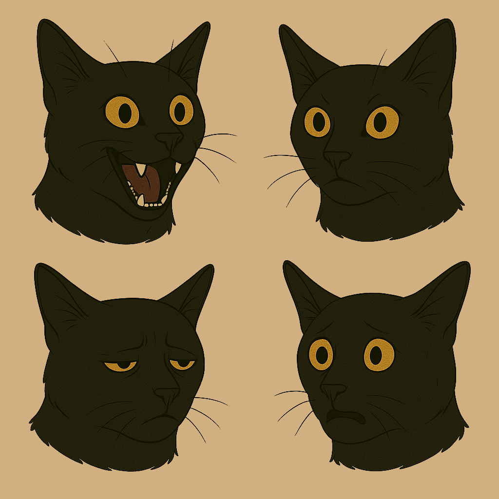

Max
Character Sheet
Role: Demon cat exiled to Earth
Personality: Mischievous, lazy, but surprisingly compassionate at times
Abilities: Telepathy, telekinesis, sharp claws, and teeth

Emotion Sheet
Neutral: Max sits calmly, his amber eyes narrowed slightly as he surveys his surroundings. His ears are perked forward, listening intently.
Angry: Max's fur is raised, and his eyes are narrowed to slits. His tail is swishing back and forth, and he looks ready to pounce.
Sleepy: Max often zones out wherever he sits, escpecially when caught in the warmth of the sun. His eyes are half-closed, and his whiskers twitch slightly in his sleep.
Grin: Max sits with his mouth open in a wide grin, revealing his sharp teeth. His eyes are narrowed and sparkling with mischief. He looks playful and ready to pounce on a toy... not that he'd ever have one.
Action Sheet
Leaping: With his body fully extended and a determined gaze in his amber eyes, Max is captured mid-leap, showcasing his agility and power as he propels himself forward.
Pawing: Seated upright, Max raises a paw, his obsidian claws slightly extended, as if swatting playfully at a passing object or demanding attention with a sharp but controlled gesture.
Plotting: Crouched low to the ground with narrowed amber eyes and a focused expression, Max appears to be stalking or carefully observing something, his posture conveying a sense of anticipation and strategic intent.
Playful teasing: Lying on his back with his paws raised in the air, Max displays a more relaxed and playful side, perhaps inviting interaction or engaging in a bout of feline acrobatics.

Ludo

Character Sheet
Role: Devil friend of Max
Personality: Mischievous, prankster, often appears as a child
Emotion Sheet
Joy: With a gleeful sparkle in his golden eyes and a toothy grin that practically vibrates with mischief, Ludo looks like he just got away with his most ridiculous prank yet.
Angry: His eyes narrow into slits and his sharp teeth bared, Ludo's fury simmers like a child denied dessert--but with far more bite.
Disgust: Ludo scrunches his nose and culs his lip in theatrical revulsion, as if someone just dared suggest he clean up his own mess.
Surprise: Eyes wide and mouth agape, Ludo's expression teeters between awe and the realization that maybe--just maybe--this prank went a bit too far.

Action Sheet
Jumping: With one fist triumphantly raised and a manic gleam in his eye, Ludo bounds forward like a sugar-high goblin on a mission of mayhem.
Stalking: Crouched low with claws flexed and a feral grin spreading across his face, Ludo slinks like a cat who knows you left the pantry open.
Greeting: Strutting forward with an open palm and sharp smile, Ludo waves like your best friend--right before he steals your boots.